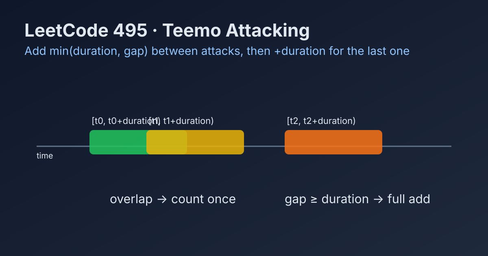

LeetCode 495: Teemo Attacking (Merged Poison Duration Intervals)
LeetCode 495ArrayIntervalSimulationToday we solve LeetCode 495 - Teemo Attacking.
Source: https://leetcode.com/problems/teemo-attacking/

English
Problem Summary
Each attack at time t poisons Ashe for duration seconds, meaning interval [t, t + duration). If attacks overlap, poison time does not double count. Return total poisoned seconds.
Key Insight
Think in intervals. For consecutive attacks at timeSeries[i-1] and timeSeries[i], the new contribution is:
min(duration, timeSeries[i] - timeSeries[i-1])
Then add one final duration for the last attack.
Algorithm
1) If the array is empty, return 0.
2) Initialize answer = 0.
3) For each i from 1 to n-1, add min(duration, gap) where gap = timeSeries[i] - timeSeries[i-1].
4) Add duration for the final attack and return.
Complexity Analysis
Time: O(n).
Space: O(1).
Common Pitfalls
- Adding full duration for every attack (over-counts overlap).
- Forgetting the last interval.
- Treating interval end as inclusive (the problem uses half-open duration counting).
Reference Implementations (Java / Go / C++ / Python / JavaScript)
class Solution {
public int findPoisonedDuration(int[] timeSeries, int duration) {
if (timeSeries.length == 0) return 0;
int ans = 0;
for (int i = 1; i < timeSeries.length; i++) {
int gap = timeSeries[i] - timeSeries[i - 1];
ans += Math.min(duration, gap);
}
ans += duration;
return ans;
}
}func findPoisonedDuration(timeSeries []int, duration int) int {
if len(timeSeries) == 0 {
return 0
}
ans := 0
for i := 1; i < len(timeSeries); i++ {
gap := timeSeries[i] - timeSeries[i-1]
if gap < duration {
ans += gap
} else {
ans += duration
}
}
return ans + duration
}class Solution {
public:
int findPoisonedDuration(vector<int>& timeSeries, int duration) {
if (timeSeries.empty()) return 0;
int ans = 0;
for (int i = 1; i < (int)timeSeries.size(); i++) {
int gap = timeSeries[i] - timeSeries[i - 1];
ans += min(duration, gap);
}
return ans + duration;
}
};class Solution:
def findPoisonedDuration(self, timeSeries: list[int], duration: int) -> int:
if not timeSeries:
return 0
ans = 0
for i in range(1, len(timeSeries)):
gap = timeSeries[i] - timeSeries[i - 1]
ans += min(duration, gap)
return ans + durationvar findPoisonedDuration = function(timeSeries, duration) {
if (timeSeries.length === 0) return 0;
let ans = 0;
for (let i = 1; i < timeSeries.length; i++) {
const gap = timeSeries[i] - timeSeries[i - 1];
ans += Math.min(duration, gap);
}
return ans + duration;
};中文
题目概述
每次攻击发生在 t 时刻，会产生 [t, t + duration) 这段中毒时间。若两次攻击区间重叠，重叠部分不能重复计数。求总中毒时长。
核心思路
把每次攻击看作区间合并问题。相邻两次攻击之间的新增贡献是：
min(duration, timeSeries[i] - timeSeries[i-1])
最后还要补上最后一次攻击的完整 duration。
算法步骤
1）若数组为空，返回 0。
2）答案初始化为 0。
3）从第二次攻击开始遍历，计算相邻间隔 gap，累加 min(duration, gap)。
4）循环结束后加上最后一段 duration，返回答案。
复杂度分析
时间复杂度：O(n)。
空间复杂度：O(1)。
常见陷阱
- 对每次攻击都直接加 duration，导致重叠区间重复计数。
- 忘记补最后一次攻击的持续时间。
- 把区间右端点当作闭区间处理，造成 +1 偏差。
多语言参考实现（Java / Go / C++ / Python / JavaScript）
class Solution {
public int findPoisonedDuration(int[] timeSeries, int duration) {
if (timeSeries.length == 0) return 0;
int ans = 0;
for (int i = 1; i < timeSeries.length; i++) {
int gap = timeSeries[i] - timeSeries[i - 1];
ans += Math.min(duration, gap);
}
ans += duration;
return ans;
}
}func findPoisonedDuration(timeSeries []int, duration int) int {
if len(timeSeries) == 0 {
return 0
}
ans := 0
for i := 1; i < len(timeSeries); i++ {
gap := timeSeries[i] - timeSeries[i-1]
if gap < duration {
ans += gap
} else {
ans += duration
}
}
return ans + duration
}class Solution {
public:
int findPoisonedDuration(vector<int>& timeSeries, int duration) {
if (timeSeries.empty()) return 0;
int ans = 0;
for (int i = 1; i < (int)timeSeries.size(); i++) {
int gap = timeSeries[i] - timeSeries[i - 1];
ans += min(duration, gap);
}
return ans + duration;
}
};class Solution:
def findPoisonedDuration(self, timeSeries: list[int], duration: int) -> int:
if not timeSeries:
return 0
ans = 0
for i in range(1, len(timeSeries)):
gap = timeSeries[i] - timeSeries[i - 1]
ans += min(duration, gap)
return ans + durationvar findPoisonedDuration = function(timeSeries, duration) {
if (timeSeries.length === 0) return 0;
let ans = 0;
for (let i = 1; i < timeSeries.length; i++) {
const gap = timeSeries[i] - timeSeries[i - 1];
ans += Math.min(duration, gap);
}
return ans + duration;
};
Comments